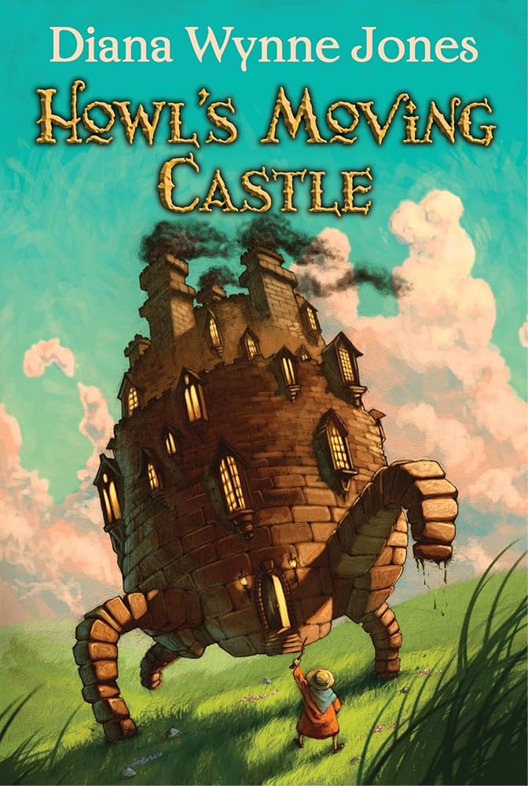
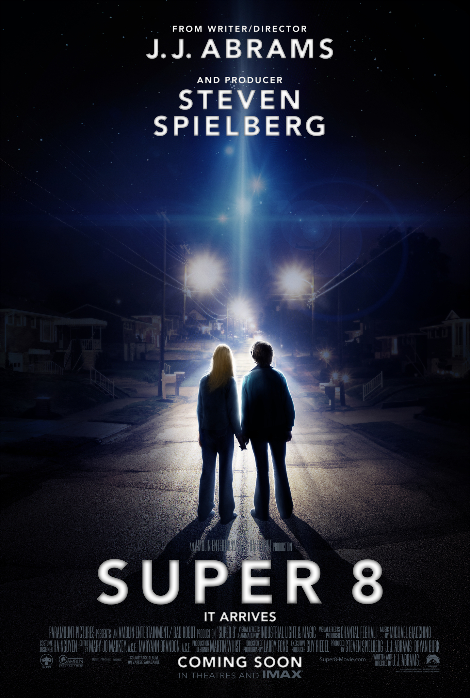
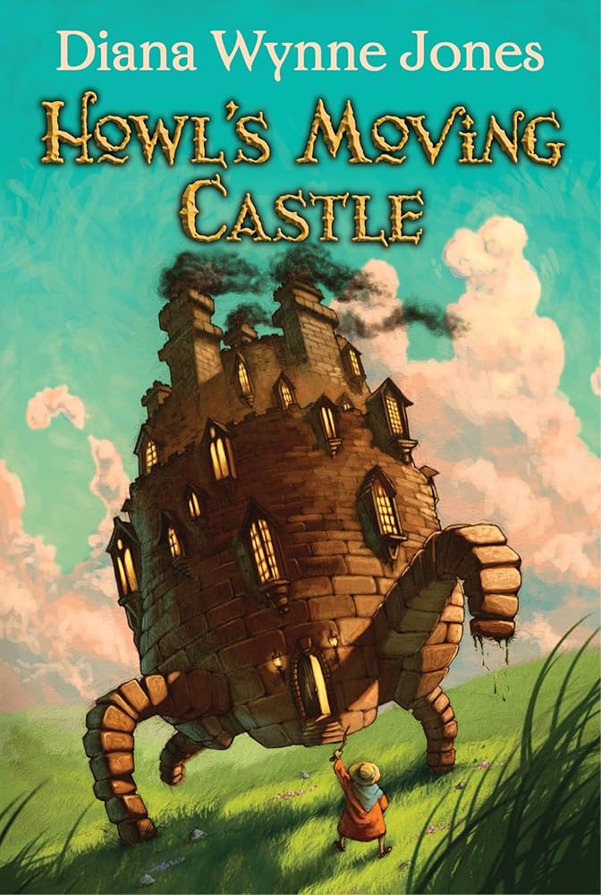
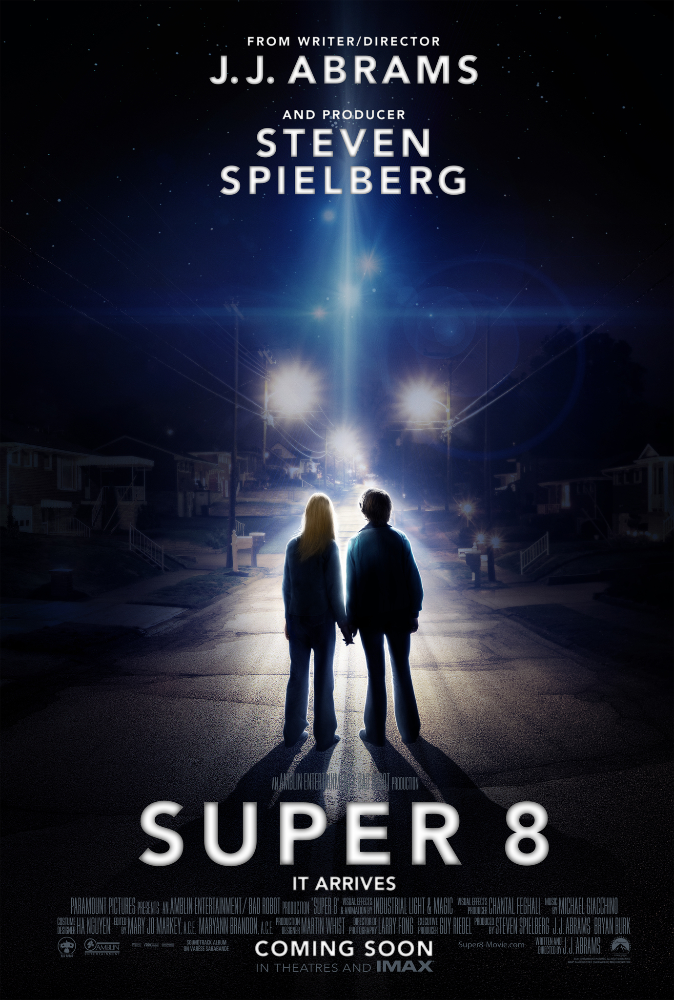
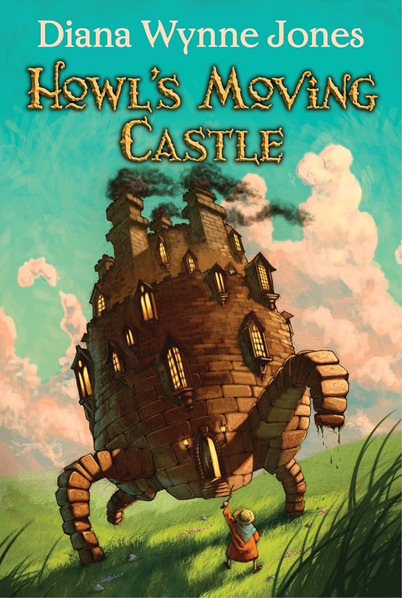
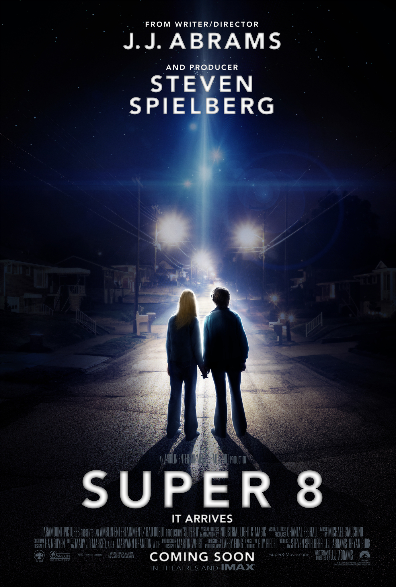

GENRE: Fantasy/Romance RUNTIME: 2hr 14min RATING: 7/10
SYNOPSIS
When an interdimensional rupture unravels reality, an unlikely hero
must channel her newfound powers to fight bizarre and bewildering
dangers from the multiverse as the fate of the world hangs in the
balance.

GENRE: Fantasy RUNTIME: 1hr 59min RATING: 8.2/10
SYNOPSIS
Sophie (Emily Mortimer) has an uneventful life at her late father's
hat shop, but all that changes when she befriends wizard Howl
(Christian Bale), who lives in a magical flying castle. However,
the evil Witch of Waste (Lauren Bacall) takes issue with their
budding relationship and casts a spell on young Sophie, which ages
her prematurely. Now Howl must use all his magical talents to battle
the jealous hag and return Sophie to her former youth and beauty.
GENRE: Sci-fi/thriller RUNTIME: 1hr 52min RATING: 7/10
SYNOPSIS
In 1979 Ohio, several youngsters (Elle Fanning, Joel Courtney,
Gabriel Basso) are making a zombie movie with a Super-8 camera.
In the midst of filming, the friends witness a horrifying train
derailment and are lucky to escape with their lives. They soon
discover that the catastrophe was no accident, as a series of
unexplained events and disappearances soon follows. Deputy Jackson
Lamb (Kyle Chandler), the father of one of the kids, searches for
the terrifying truth behind the crash.